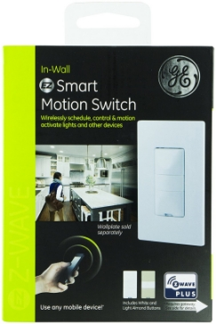
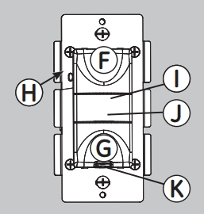

GE In-Wall Smart Motion Switch 26931¶
GE Z-Wave Plus Wireless Smart Lighting Control Motion Switch, On/Off, In-Wall, Occupancy Vacancy Sensor, Works with Amazon Alexa, 26931¶

Operation¶

- Top Button — Press & release to turn the switch on
- Bottom Button — Press & release to turn the switch off
- Configuration Button — Changes the operation mode of switch
- Motion Sensor
- Blue LED — behind cover
- AirGap Switch — Pull the air gap switch out to disconnect the power. Push it all the way back in for normal operation
Specification¶
- Power: 120 VAC, 60 Hz.
- Signal (Frequency): 908.4/916 MHz.
- Maximum Loads: 960W, incandescent, ½ HP Motor or 1800W (15A) Resistive
- Range: Up to 150 feet line of sight between the Wireless Controller or the closest Z-Wave receiver module.
- Operating Temperature Range: 32-104° F (0-40° C)
- For indoor use only.
- Specifications subject to change without notice due to continuing product improvement
Inclusion/Exclusion to/from a network¶
- Put controller to Inclusion/Exclusion mode
- Push top or bottom paddle once to reset device. Device will be included/excluded to/from zwave network.
Factory reset¶
Press and release the top button ten times.
Configuration description¶
N/A